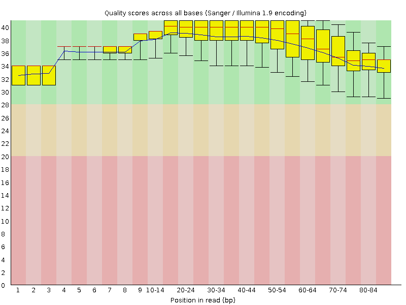
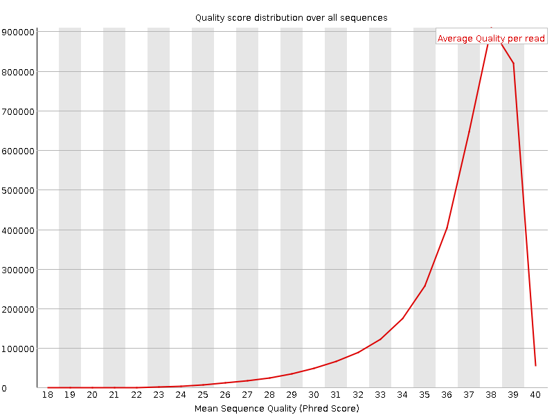
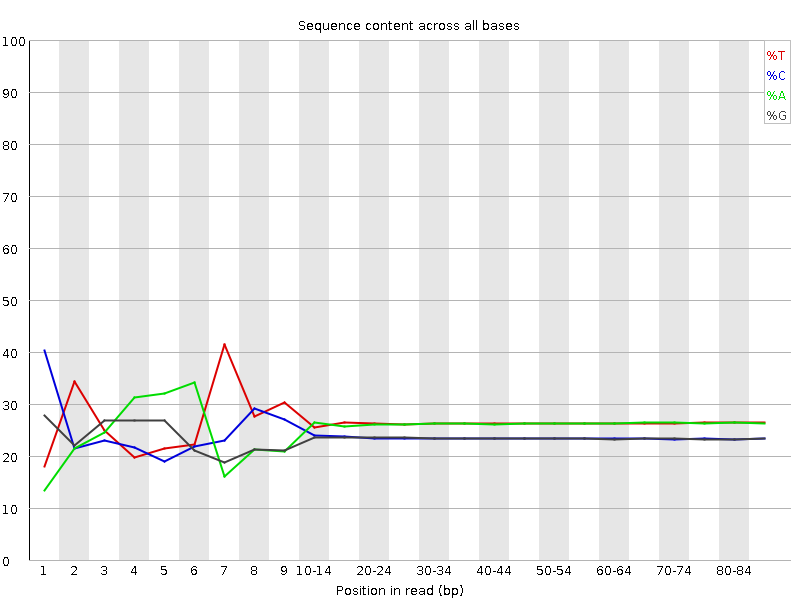
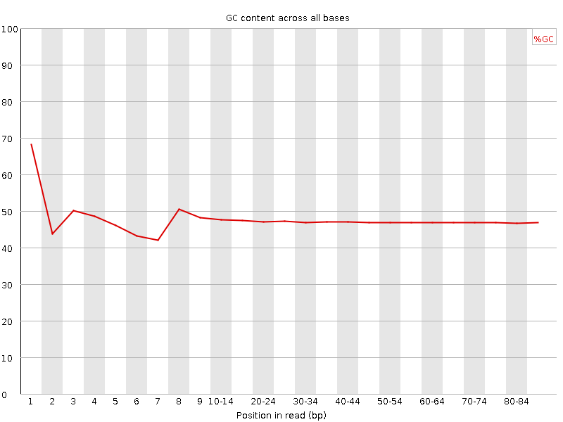
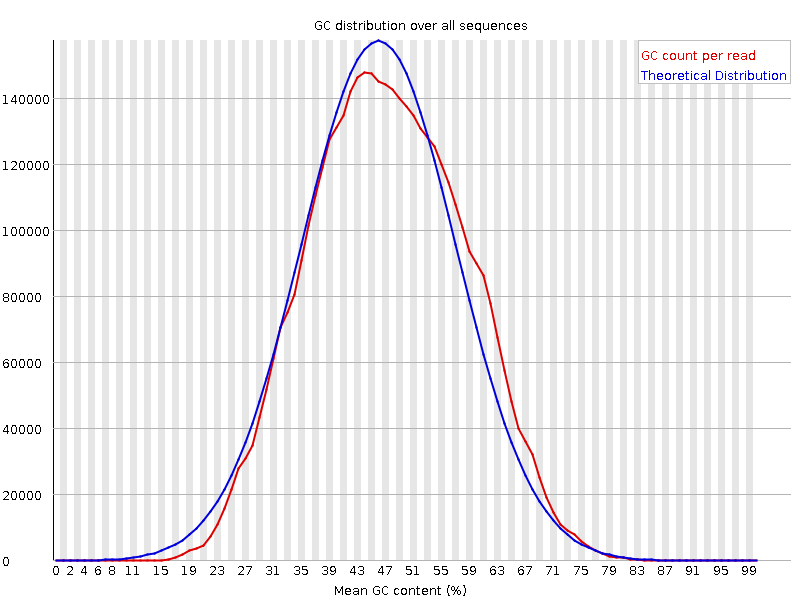
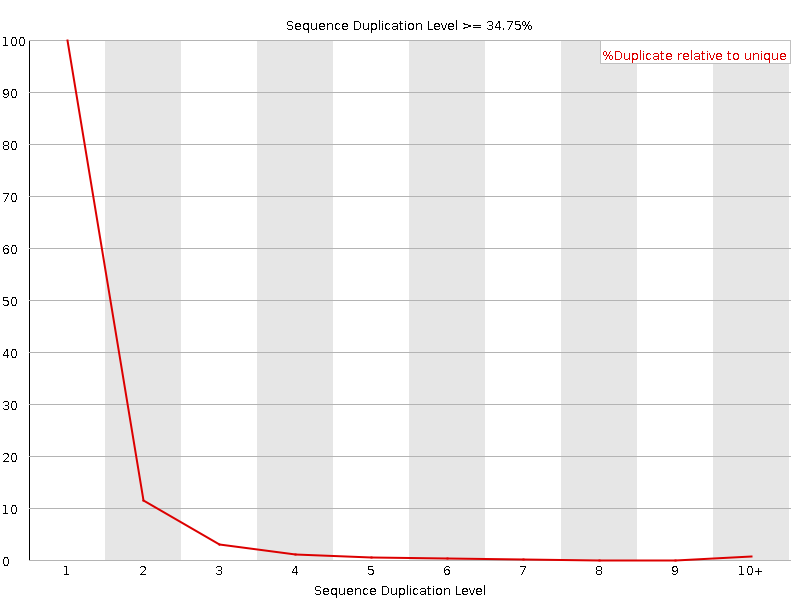
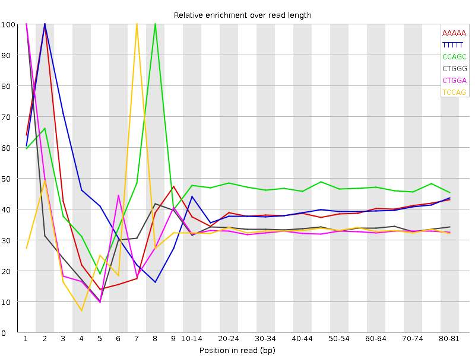

![[OK]](Icons/tick.png) Basic Statistics
Basic Statistics
| Measure | Value |
|---|---|
| Filename | c786-O.12_1.f.fastq |
| File type | Conventional base calls |
| Encoding | Sanger / Illumina 1.9 |
| Total Sequences | 3710163 |
| Filtered Sequences | 0 |
| Sequence length | 85 |
| %GC | 47 |
Per base sequence quality

Per sequence quality scores

![[FAIL]](Icons/error.png) Per base sequence content
Per base sequence content

Per base GC content

Per sequence GC content

Per base N content

Sequence Length Distribution

![[WARN]](Icons/warning.png) Sequence Duplication Levels
Sequence Duplication Levels

Overrepresented sequences
No overrepresented sequences
Kmer Content

| Sequence | Count | Obs/Exp Overall | Obs/Exp Max | Max Obs/Exp Position |
|---|---|---|---|---|
| AAAAA | 1012075 | 2.7477515 | 7.0426955 | 2 |
| TTTTT | 971415 | 2.4906435 | 6.2033606 | 2 |
| CCAGC | 596405 | 2.3924267 | 5.0688214 | 8 |
| CTGGG | 567975 | 2.2848141 | 6.741665 | 1 |
| CTGGA | 615040 | 2.2321243 | 6.7583246 | 1 |
| TCCAG | 608805 | 2.1937912 | 6.615426 | 7 |
| CTCCA | 584670 | 2.0918472 | 5.6091537 | 6 |
| CAGAA | 587970 | 1.9473107 | 5.0675383 | 1 |
| CTGGC | 486690 | 1.9439099 | 5.0097947 | 1 |
| GAAAA | 635975 | 1.9138656 | 5.2602677 | 1 |
| AAAAT | 707700 | 1.8995132 | 5.53198 | 3 |
| GGAAA | 504695 | 1.6834762 | 5.098412 | 1 |
| ATCCA | 380785 | 1.2379135 | 5.3679214 | 6 |